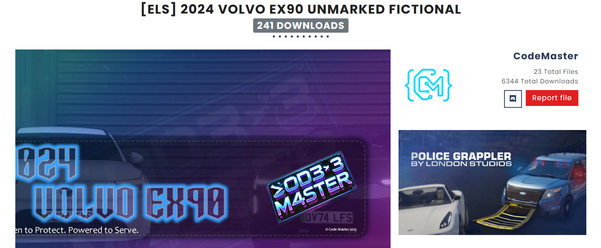
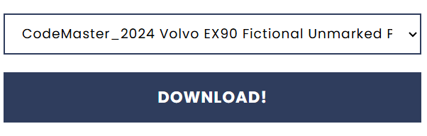
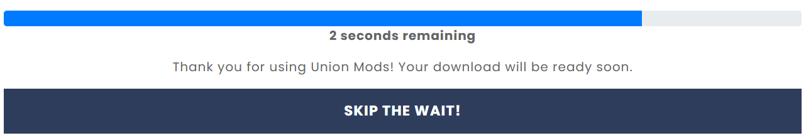
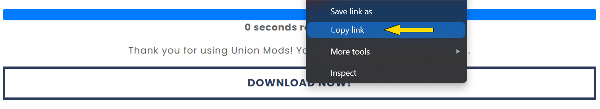

×
How to Get the UnionMods Download URL
Step 1 – Go to the Old UnionMods Site
Visit the old version of UnionMods and find the file you want to download.

Step 2 – Click the Download Button
On the file’s page, click the Download button. This will redirect you to the Skip The Wait page.

Step 3 – Skip the Wait
Once on the Skip The Wait page, click the next Download button. This will take you to the final download page.

Step 4 – Copy the Final Link
Right-click on the final Download Now button, select Copy Link, and paste it into the downloader tool.

If you are redirected to the UnionMods login page after clicking the Download button, simply return to the UnionMods Downloader and click Download again to continue.